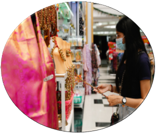
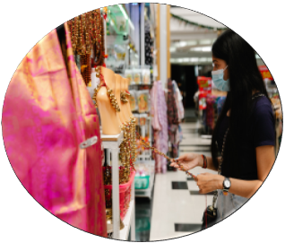

Manchester boasts a diverse array of shopping centres that cater to various tastes and preferences. The iconic Trafford Centre stands out as one of the largest shopping destinations in Europe, offering a vast selection of high-end and mainstream stores, along with dining and entertainment options. For those seeking a more eclectic and independent shopping experience, the Northern Quarter is a must-visit, featuring unique boutiques, vintage shops, and artisanal stores. The Arndale Centre, located in the heart of the city, provides a mix of well-known brands and popular retailers . Additionally, the Lowry Outlet at Salford Quays offers discounted designer goods. Keep an eye on the city's events calendar for seasonal markets and pop-up shops, providing a dynamic and ever-changing retail landscape in Manchester.